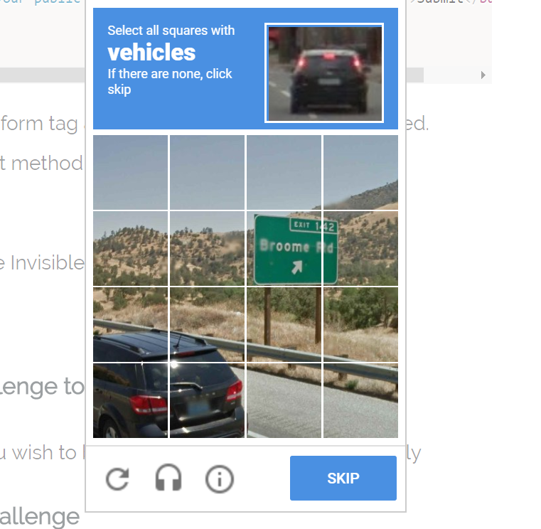
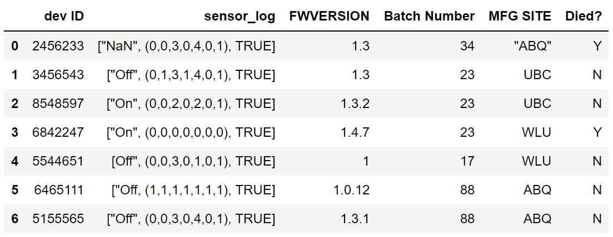
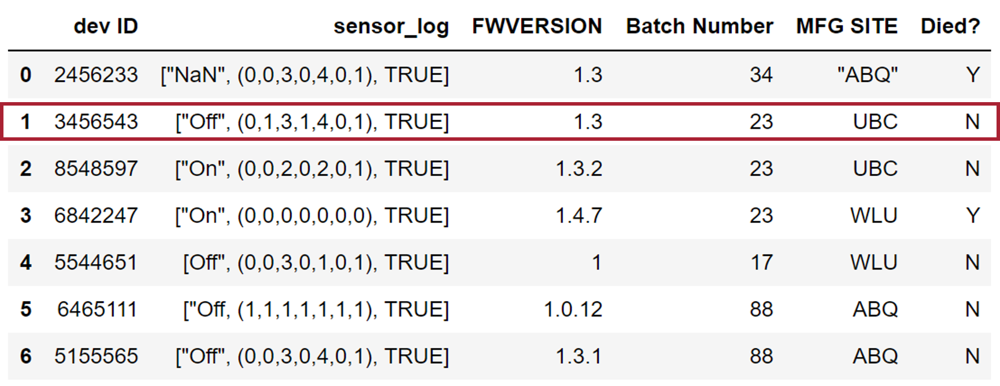
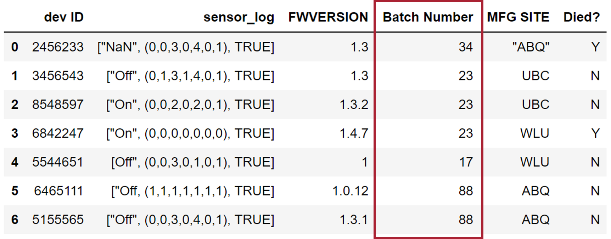
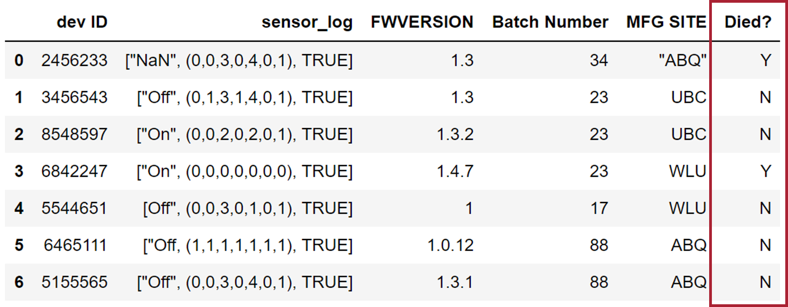
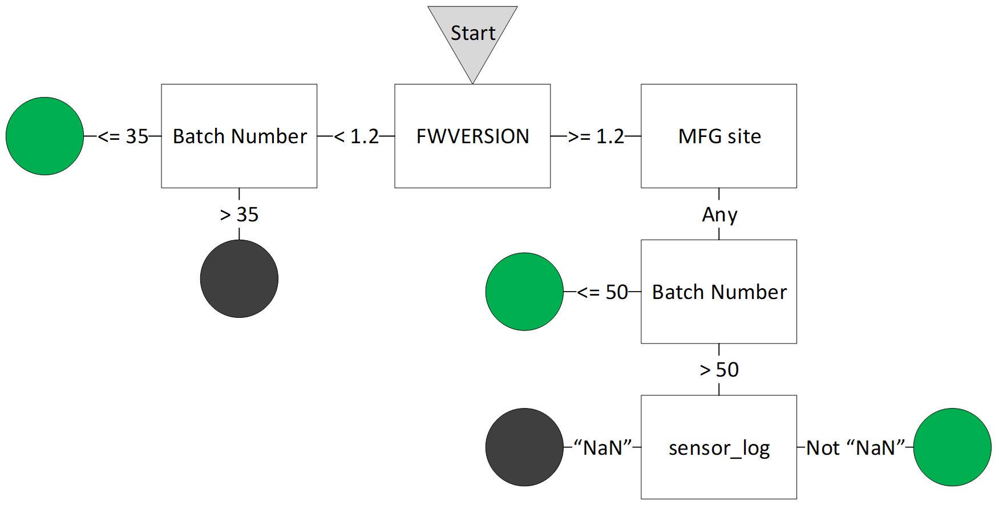
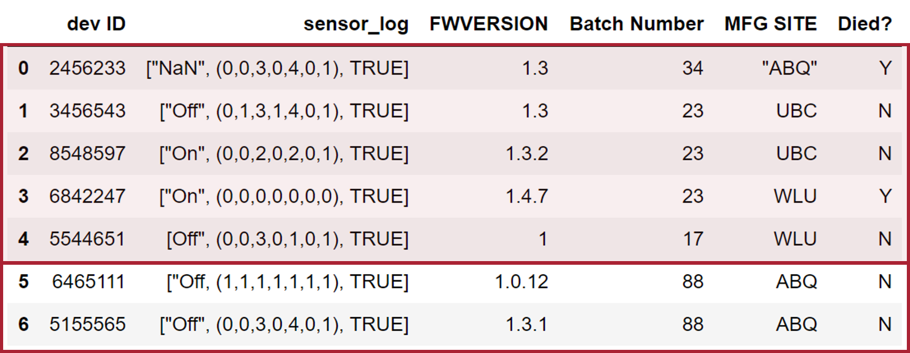
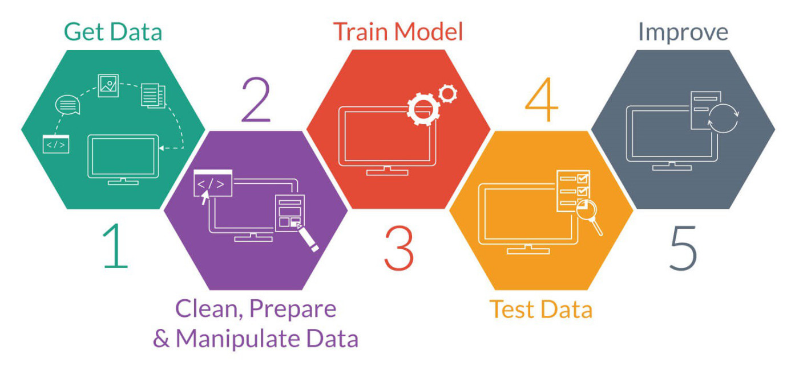

## 7 habits of highly learned machines Sarah Kaiser 7 June 2018
### What does it even mean for machines to learn? <a href="https://doi.org/10.1147%2Frd.33.0210"><i class="fragment"> "... to progressively improve at a task without being explicitly programmed."</i></a>
#### Where do we already use ML? - Predictive text: [Recurrent Neural Networks](https://medium.com/@curiousily/making-a-predictive-keyboard-using-recurrent-neural-networks-tensorflow-for-hackers-part-v-3f238d824218) - Netflix: [Recommendation Engines](https://research.netflix.com/) - Spam filtering: [Supervised Classification](https://blogs.msdn.microsoft.com/tzink/2017/05/21/how-the-outlook-com-spam-fighters-program-works/) - Ride sharing: [Boosted Trees](http://www.geekwire.com/2016/uber-collapse-without-pattern-finding-computers-says-chief-machine-learning/) - Credit decisions: [Nonparametric Forecasting](http://bigdata.csail.mit.edu/node/22) - Photo facial recognition: [Deep Neural Networks](https://research.fb.com/publications/deepface-closing-the-gap-to-human-level-performance-in-face-verification/) - Voice assistants: [Neural Networks](https://www.amazon.jobs/en/teams/alexa-machine-learning) - Fraud detection: [???](https://www.sas.com/en_us/insights/articles/risk-fraud/fraud-detection-machine-learning.html)
#### You are training the computer! <a href="http://www.thatsoftwaredude.com/images/post/invisible-recaptcha.png">  </a>
### Where could this be useful for Pensar? <i class="fragment"> When it take a person a long time to either think or write up instructions for a computer. Including where we don't know the right answer!</i>
### Where could this be useful for Pensar? - PCB board routing optimization [1](https://www.eetimes.com/document.asp?doc_id=1332917) [2](http://www.solidodesign.com/ml-labs/) - CAD generative part [design](https://www.autodesk.com/solutions/generative-design)* - CAD part discovery and [recommendation engines](http://blogs.autodesk.com/inthefold/introducing-design-graph-how-machine-learning-will-transform-3d-engineering/) - Adaptive control for embedded systems (i.e. load balancing) - Component recommendation engines - IoT integration for product development - Signal processing
<h3> ML via case study:</h3> 
ML via case study: ### Example/Datum 
ML via case study: ### Feature 
ML via case study: ### Label 
ML via case study: ### Model 
ML via case study: ### Bias <img src="https://github.com/dynamicwebpaige/DISC-unconf/blob/master/data/10.JPG?raw=true" alt="Bias infographic for decision making" width="65%" height="65%"/> [Design Workflow](https://github.com/dynamicwebpaige/DISC-unconf/blob/master/EthicalAlgorithmTool.md)
ML via case study: ### Model Training and Validation 
ML via case study: ### Cost/Loss
<h3> What things are machines good at learning?</h3>
With labels: <h3> Supervised Learning</h3> <img class="fragment" src="https://aldro61.github.io/microbiome-summer-school-2017/figures/figure.classification.vs.regression.png" width="60%" height="60%"/>
Without labels: <h3> Unsupervised Clustering</h3> <img src="https://www.iotforall.com/wp-content/uploads/2018/01/Screen-Shot-2018-01-17-at-8.10.14-PM.png" width="80%" height="80%"/>
Without labels: <h3> Unsupervised Dimensionality Reduction</h3> <img src="https://cdn-images-1.medium.com/max/1200/1*WRKdN-NYF0mMumhfOXVa2Q.png" width="80%" height="80%"/>
When you want the machine to discover things about data structure: ### Deep learning / Neural nets <img src="https://i.kinja-img.com/gawker-media/image/upload/t_original/acnhdushcdjvxvofwiad.gif" width="40%" height="40%"/> [Google's Deep Dream](https://www.gizmodo.com.au/2017/04/bob-ross-processed-by-a-neural-network-is-the-most-soothing-way-to-melt-your-brain/)
##### When you want the machine to learn to react to an environment: ## Reinforcement learning <iframe width="560" height="315" src="https://www.youtube.com/embed/qv6UVOQ0F44?rel=0&start=45" frameborder="0" allow="autoplay; encrypted-media" allowfullscreen></iframe> <aside class="notes">Reinforcement learning differs from standard supervised learning in that correct input/output pairs[clarification needed] need not be presented, and sub-optimal actions need not be explicitly corrected. Instead the focus is on performance, which involves finding a balance between exploration (of uncharted territory) and exploitation (of current knowledge).</aside>
<h3> How are you going to spend your time setting up a ML workflow?</h3> <a class="fragment" href="http://hazaq.me/assets/images/ml-workflow.jpeg">  </a>
<h3> 2. Data Janitor! 😐</h3> | Age | Has_Job | Education | Defaulted? | |------------|---------|-------------|------------| | 22 | Yes | Graduate | No | | 47.9999999 | NULL | High School | No | | 35 | Yes | N/A | Yes | | 21 | nope | lololololo | Yes | | "42" | Yes | Graduate | Maybe |
There a lots of tools to help you manage all the data and acquisition pipeline! - Python -> [Pandas](https://pandas.pydata.org/) - R -> [dplyr](https://dplyr.tidyverse.org/) and [tidyr](http://tidyr.tidyverse.org/) - [Trifacta](https://www.trifacta.com/products/wrangler/) - [Tabula](https://tabula.technology/) - can get tables out of pdf files - [OpenRefine](http://openrefine.org/) - [Dremio](https://www.dremio.com/) - Connects virtually any data source or format - Excel-foo
What are some good ML packages/tools out there? - Languages/Packages - [TensorFlow](https://www.tensorflow.org/) - [Caffe](http://caffe.berkeleyvision.org/) - [Keras](https://keras.io/) - [ML.NET](https://www.microsoft.com/net/learn/apps/machine-learning-and-ai/ml-dotnet) - Platforms - [Microsoft Cognitive Toolkit](https://www.microsoft.com/en-us/cognitive-toolkit/) - [Azure ML Studio](https://azure.microsoft.com/en-us/services/machine-learning-studio/) - [Amazon AWS Machine Learning](https://aws.amazon.com/machine-learning/) - [Google Cloud AI](https://cloud.google.com/products/machine-learning/)
<h3> Hard to find the Hardware for ML?</h3>
<h3> Cool ML in the wild:</h3>
#### Neural Network Paint Colors#### <a href="https://i.imgur.com/NNTR7ZV.jpg"> <img src="https://i.imgur.com/NNTR7ZV.jpg" alt="https://i.imgur.com/NNTR7ZV.jpg" width="80%" height="80%"/> [link](http://www.iflscience.com/technology/an-ai-was-trained-to-create-new-colors-it-was-wonderfully-terrible/)
<iframe width="100%" height="900" src="https://storage.googleapis.com/tfjs-examples/webcam-transfer-learning/dist/index.html" allow="camera"></iframe> [More cool browser based ML here](https://js.tensorflow.org/)
<h2> Git learning! </h2> - [**A visual introduction to machine learning**](http://www.r2d3.us/visual-intro-to-machine-learning-part-1/) - [**Google ML crash course (TensorFlow)**](https://developers.google.com/machine-learning/crash-course/) - [Microsoft Azure Machine Learning Studio](https://azure.microsoft.com/en-us/services/machine-learning-studio/) - [awesome-machine-learning](https://github.com/josephmisiti/awesome-machine-learning) - [Keras + Deep Learning](https://github.com/dynamicwebpaige/keras-tutorial) - [SciKit-Learn](https://github.com/amueller/scipy-2017-sklearn) <a src= "https://i.imgur.com/E2V8Xug.mp4"> <video loop data-autoplay src="https://i.imgur.com/E2V8Xug.mp4" alt="killer robots"></video> </a>